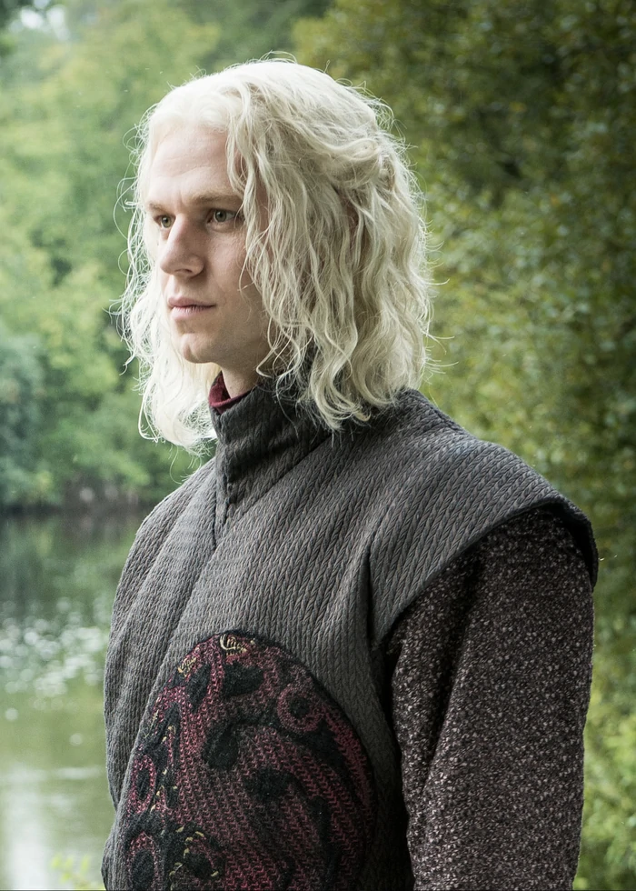
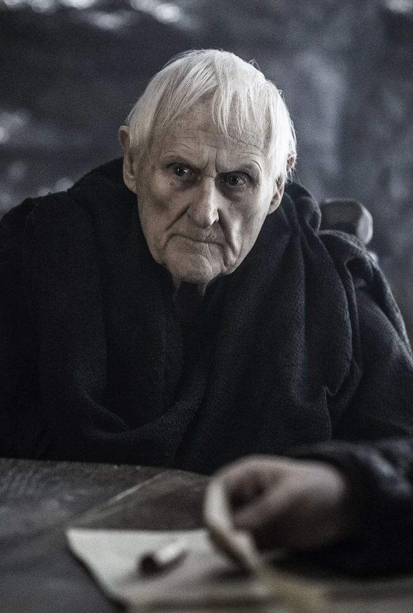

Maison Targaryen
| Photo | Information |
|---|---|
 |
Nom: Daenerys Targaryen |
| Titre: Reine des Andals, de Rhoynar et des Premiers Hommes (prétendante), Protectrice du Royaume (prétendante), Khaleesi de la Grande Mer Herbeuse, Dame de Peyredragon, Reine de Meereen (anciennement) | |
| Origine: Peyredragon | |
| Culture: Valyriens | |
| Âge: 23 ans | |
| Statut: décédée | |
| Mort: An 305 poignardée en plein cœur par Jon Snow dans la salle où ce trouve le trône de fer | |
| Enfants: Rhaego, Drogon (considéré comme son fils) , Rhaegal (considéré comme son fils) , Viserion (considéré comme son fils) Mari: Drogo Parents: Aerys II Targaryen, Rhaella Targaryen Frères: Rhaegar Targaryen, Viserys Targaryen Neveux: Jon Snow, Rhaenys Targaryen, Aegon Targaryen |
|
|  | Nom: Rhaegar Targaryen |
| Titre: Prince de Peyredragon | |
| Origine: Port-Réal | |
| Culture: Valyriens | |
| Âge: 24 ans | |
| Statut: décédé | |
| Mort: Frappé au plastron par Robert Baratheon armé de son marteau de guerre lors de la Bataille du Trident | |
| Enfants: Rhaenys Targaryen, Aegon Targaryen, Jon Snow Epouse: Elia Martell, Lyanna Stark Parents: Aerys II Targaryen, Rhaella Targaryen Frères et soeures: Daenerys Targaryen, Viserys Targaryen Neveux: Rhaego, Trystan Martell, Rhaenys Targaryen, Aegon Targaryen, Obara Sand, Nymeria Sand, Tyerne Sand |
|
 |
Nom: Viserys Targaryen |
| Titre: Roi des Andals et des Premiers Hommes (prétendant), Seigneur des Sept Couronnes (prétendant), Protecteur du Royaume(prétendant) | |
| Origine: Port-Réal | |
| Culture: Valyriens | |
| Âge: 22 ans | |
| Statut: décédé | |
| Mort: Brûlé avec de l'or fondu par Drogo | |
| Parents: Aerys II Targaryen, Rhaella Targaryen Frères et soeures: Daenerys Targaryen, Rhaegar Targaryen Neveux: Jon Snow, Rhaenys Targaryen, Aegon Targaryen, Rhaego |
|
 |
Nom: Jon Snow |
| Titre: Gouverneur du Nord (anciennement), Défenseur du Nord (anciennement), Roi du Nord (anciennement), Lord Commandant de la Garde de Nuit | |
| Origine: Winterfell | |
| Culture: Nordiens | |
| Âge: 23 ans | |
| Statut: vivant | |
| Parents: Lyanna Stark, Rhaegar Targaryen Parents adoptifs et oncle et tante: Eddard Stark, Catelyn Stark Cousins: Robb stark, Sansa Stark, Arya Stark, Rickon Stark Cousin: Jon Snow, Robin Arryn Oncles et tantes: Daenerys Targaryen, Catelyn Stark, Brandon Stark, Benjen Stark, Viserys Targaryen |
|
|  | Nom: Aemon Targaryen |
| Titre: Mestre, Prince (autrefois) | |
| Origine: Donjon Rouge, Port-Réal | |
| Culture: Valyriens | |
| Âge: 104 ans | |
| Statut: décédé | |
| Mort: Mort de vieillesse | |
| Parents: Maekar I Targaryen, Dyanna Dayne Frères: Aerion Targaryen, Aegon V Targaryen Neveux: Duncan Targaryen, Aerys II Targaryen, Rhaella Targaryen Petit-neveux: Rhaegar Targaryen, Viserys Targaryen, Daenerys Targaryen, Jon Snow |